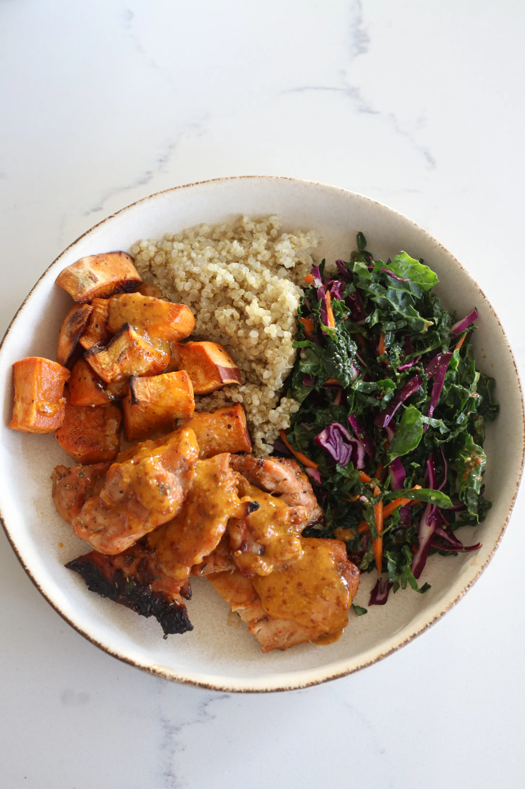

home
Sweetgreen Hot Honey Chicken Plate

Description
This is a new recipe I'm trying out this week. I chose it because I have some chicken thighs in the freezer and it has lots of fresh vegetables. Although I have never been to Sweetgreen, so I won't be able to testify if this meal does it's muse justice, I have heard good thing and am exited to give it a try.
This is what the recipe author had to say about it: Ever since I went to New York earlier this summer and had Sweetgreen for the first time in years, I’ve been obsessed with recreating their bowls! This Sweetgreen Hot Honey Chicken Plate was a request after I made my favorite Salmon Taco Bowl recreation from Sweetgreen. The hot honey sauce in this dish is INCREDIBLE – it’s sweet, spicy, and this recipe makes enough to have leftovers. I topped it on a simple piece of roast salmon, and it was also so delicious.
Ingredients
For the plate
- 2 cups of shredded kale
- 1/4 cup shredded carrots
- 1/4 head small red cabbage, thinly sliced / shredded
- 3/4 cup of quinoa
- 2 sweet potatoes
- Olive oil
- Kosher salt
- Black pepper
- 1 lemon
Hot Honey Mustard Sauce
- 1/4 cup dijon mustard
- 1/4 cup honey
- Juice of 1 Lemon
- 1/2 cup olive oil
- 2 tablespoons of hot sauce (i use sriracha)
- 1/2 teaspoon kosher salt
Blackened Chicken
- 1.5 lb chicken thighs
- 1.5 teaspoons kosher salt
- 1 tablespoon brown sugar
- 1 teaspoon paprika
- 1 teaspoon dried oregano
- 1 teaspoon garlic powder
- 1 tablespoon oil
- 1/2 lemon, juiced
Instructions
- In a small pot, add the 3/4 cup of quinoa, 1.5 cups of water, and pinch of kosher salt. Bring up to a boil, then stir and reduce the heat to low. Cover and cook for 15 minutes. When finished, remove the lid, fluff, and let cool.
- Preheat the oven to 425F.
- Marinate the chicken thighs. Combine all the ingredients in a mixing bowl, then place the chicken into an even layer on a baking sheet. Once the oven is preheated, roast for 15 minutes. After the chicken has been roasting for 15 minutes, remove this from the oven. If you’d like more of a char, you can broil this for an additional minute, just be sure to remove the sweet potatoes when you do so. Once the chicken is ready, cut each thigh into 3 pieces.
- Prep the sweet potatoes – peel the potatoes, then cut them into 1” chunks. I typically quarter the potatoes, halve that lengthwise, then cut that final segment into quarters. Add this to a sheet tray along with about 2 tablespoons of olive oil, a couple pinches of kosher salt, and black pepper. Give everything a toss, then roast at 400F for 15-20 minutes. This can roast in the oven at the same time as the chicken.
- While the chicken and veggies are roasting, prep the remaining produce – if you bought the pre-shredded kale, carrots, and red cabbage, first add the kale to the mixing bowl. Add a squeeze of lemon juice (about 1 tablespoon) and massage the kale for 20 seconds. Add in the remaining shredded carrots and red cabbage and toss together.
- Make the dressing by combining all the ingredients in a food processor. The olive oil will emulsify with the rest of the ingredients once blended together. Taste, adjust with more hot sauce, honey, or salt as desired, then pour into an airtight container or jar.
- Spoon ¼ cup of the hot honey dressing into the salad mixture. If you’re meal prepping this, just dress the salad portion you are eating for that day.
- Assemble the plate – add some of the salad mixture, some of the quinoa, sweet potatoes, and chicken. Top the chicken with another spoonful of the hot honey dressing, and enjoy!
Source